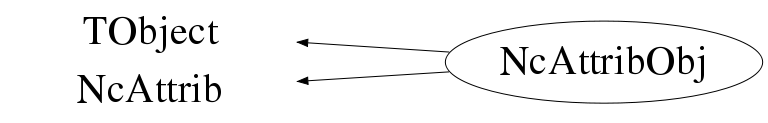

class NcAttribObj: public TObject, public NcAttrib
Class NcAttribObj Generic handling of detector signal (calibration) attributes. This class is meant to provide an NcAttrib object which is derived from TObject such that it can be stored in e.g. TObjArray etc... and that it can be written out using the ROOT I/O machinery. Example : NcAttrib a; a.SetGain(250.7); a.SetGain(1340,3); a.SetEdgeOn(3); a.SetOffset(-22.5,2); a.SetDead(1); a.Data(); NcAttribObj b(a); b.Data(); NcAttribObj c; c.Load(a); c.Data(); --- Author: Nick van Eijndhoven 18-sep-2003 Utrecht University - Modified: NvE $Date: 2010-03-19 11:10:02 +0100 (Fri, 19 Mar 2010) $ NCFS
Function Members (Methods)
public:
protected:
| virtual void | TObject::DoError(int level, const char* location, const char* fmt, va_list va) const |
| void | TObject::MakeZombie() |
| void | NcAttrib::SetCalFlags(Int_t gf, Int_t of, Int_t j) |
Data Members
public:
| enum TObject::EStatusBits { | kCanDelete | |
| kMustCleanup | ||
| kObjInCanvas | ||
| kIsReferenced | ||
| kHasUUID | ||
| kCannotPick | ||
| kNoContextMenu | ||
| kInvalidObject | ||
| }; | ||
| enum TObject::[unnamed] { | kIsOnHeap | |
| kNotDeleted | ||
| kZombie | ||
| kBitMask | ||
| kSingleKey | ||
| kOverwrite | ||
| kWriteDelete | ||
| }; |
protected:
| TArrayI* | NcAttrib::fCalflags | Flags to mark dead, edge, and gain/offset calibrated signals |
| TObjArray* | NcAttrib::fCalfuncs | Explicit signal calibration functions |
| TObjArray* | NcAttrib::fDecalfuncs | Explicit signal de-calibration functions |
| TArrayF* | NcAttrib::fGains | Gain values |
| TObjArray* | NcAttrib::fNames | User defined names for the various slots |
| TArrayF* | NcAttrib::fOffsets | Offset values |
Class Charts
{kind=link}
{kind=link}
{kind=link}
{kind=link}

Function documentation
NcAttribObj()
Creation of an NcAttrib object and initialisation of parameters. Several values of the same type (e.g. gain) can be stored in different slots. If needed, the storage for values will be expanded automatically when entering values.
NcAttribObj(NcAttrib& a)
TObject* Clone(const char* name = "") const
Make a deep copy of the current object and provide the pointer to the copy. This memberfunction enables automatic creation of new objects of the correct type depending on the object type, a feature which may be very useful for containers when adding objects in case the container owns the objects.